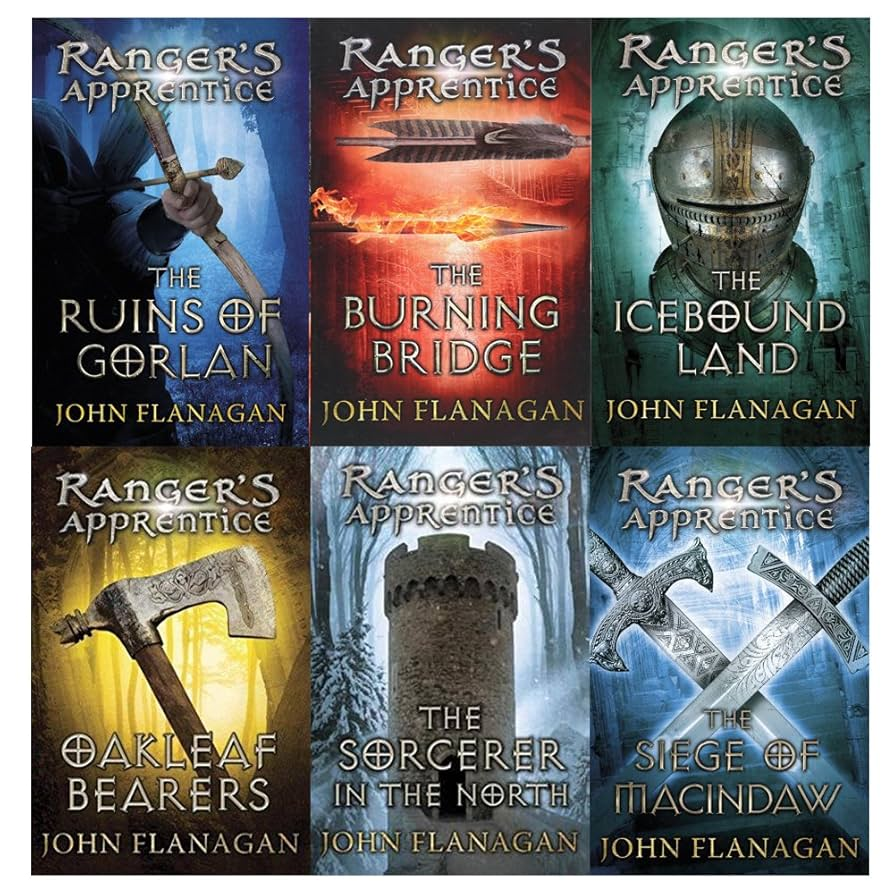

The Ranger’s Apprentice series follows Will Treaty, an orphan in the kingdom of Araluen, who is unexpectedly
chosen to train under Halt, one of the kingdom’s elite Rangers. While Will once dreamed of becoming a
knight, he soon discovers that the Rangers, who are masters of stealth, intelligence, and archery, play a
critical role in protecting the kingdom from threats most people never even see. Under Halt’s guidance, Will
learns to track enemies, move silently, and gather information that can change the course of battles.
Throughout the series, Will is drawn into a series of adventures that take him far beyond Araluen. Alongside
loyal friends like Horace, Evanlyn whose true identity carries major political weight, and even unlikely
allies like Erak, a Skandian warrior, Will faces off against invading armies, assassins, and mysterious
forces from distant lands. As he grows from an insecure boy into a confident and capable Ranger, Will’s
story becomes one of bravery, loyalty, and standing up for what’s right—even when the odds are against him.
|
Covers of the first six books:  |
Video going into detail of the books: |